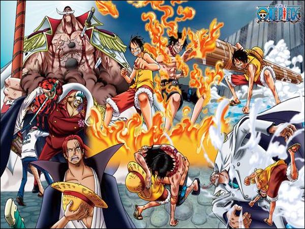

Arc Guerre au Sommet

La Saga de la Guerre au Sommet est une des sagas majeures de la série de manga et d'anime "One Piece". Elle commence avec l'Arc Marineford et se poursuit avec l'Arc Post-Marineford. Voici un résumé de la Saga de la Guerre au Sommet :
L'Arc Marineford :
- L'arc commence lorsque l'un des membres de l'équipage de Luffy, Portgas D. Ace, est capturé par la Marine et condamné à être exécuté en raison de ses liens avec Gol D. Roger, le légendaire roi des pirates. Luffy et ses amis décident alors de sauver Ace.
- Luffy s'associe à plusieurs autres pirates notables, dont l'Empereur Barbe Blanche, pour attaquer le quartier général de la Marine à Marineford. Au cours de la bataille qui s'ensuit, de nombreux personnages importants sont impliqués, y compris des membres des "Sept Grands Corsaires", des membres de la Marine et des pirates.
- Au final, Ace est libéré par Luffy, mais il est tué en protégeant son frère adoptif de l'amiral de la Marine Akainu. L'arc se termine par la défaite de Barbe Blanche, qui meurt de ses blessures, et la fuite de Luffy et de ses amis. La bataille se fini par l’empereur Shanks le Roux et son équipage qui mettent fin à la guerre.
- La saga se termine lorsque l'équipage de Luffy affronte la Marine à Loguetown, où ils rencontrent pour la première
fois Smoker, un vice-amiral de la Marine. Luffy rencontre également Dragon, son père, pour la première fois, mais ne
s'en rend pas compte.
L'Arc Post-Marineford :
- Après la bataille de Marineford, Luffy et son équipage doivent se remettre de la perte d'Ace et des événements traumatisants de la guerre. Luffy décide de se rendre sur une île pour apprendre de nouvelles techniques de combat et améliorer sa force.
- Pendant ce temps, le monde de One Piece est en ébullition alors que de nouveaux événements se produisent, notamment la découverte d'un nouvel Empereur pirate nommé Barbe Noire, la révélation d'un complot impliquant les "Quatre Empereurs" et l'ancien membre de l'équipage de Gol D. Roger, Nico Robin.